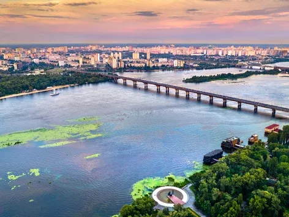

Навіть під час повномасштабної війни, туристи продовжують відвідувати Україну, адже вона
залишається
популярним
місцем для іноземних туристів в Європі. Дізнайтеся детальніше, чому варто обрати саме Україну для
своєї наступної
подорожі
Україна – частина Європейського
регіону, яка стає все більш популярним напрямком серед іноземних мандрівників. Навіть
попри повномасштабну війну, туристи продовжують приїжджати до держави, адже їх приваблює багата
українська природа,
пам'ятки Всесвітньої спадщини ЮНЕСКО, бурхлива історія та смачна кухня. Також зараз в Україні
зароджуються нові види
туризму – військовий або туризм памʼяті.
Чому серед держав європейського регіону для Вашої наступної подорожі варто обрати саме Україну?
Зʼясовуємо далі.
Гід для іноземців, як
спланувати подорож Україною у цьому матеріалі
Географічне положення України
Незалежна держава Україна розташована в південно-східній частині Європи та омивається водами
Чорного та Азовського
морів. Вона є найбільшою за величиною країною, яка повністю лежить у Європі.
Крім того, на території України знаходиться географічний центр Європи – неподалік міста Рахів,
Закарпатської
області.
Природа України: велич Карпат і не тільки
Українська природа – це окремий привід закохатися в цю країну. Від гірських вершин Карпат до степів
півдня, від тихих
лісів Полісся до мальовничих берегів морів – кожен регіон має свою особливу атмосферу.
Головною перлиною природи України без сумніву є Карпати – один із наймальовничіших гірських масивів у
всій Східній
Європі. Тут туристи можуть підкорити Говерлу – найвищу вершину України, або пройти екостежками
Національних природних
парків. Справжнім символом Карпат є озеро Синевир, розташоване на висоті майже 1000 м над рівнем
моря. Це найглибше
гірське озеро в Україні, якому понад 10 тисяч років.
Для поціновувачів спокою та оздоровлення варто звернути увагу на термальні курорти Закарпаття,
зокрема у Берегово та
Косино. Вони пропонують не лише купання у термальних джерелах, а й
SPA-програми, що базуються на
місцевих мінеральних
водах.
Також в Україні популярні маршрути вздовж річок Дністра, Десни та Південного Бугу, де туристи можуть
насолоджуватися
сплавами, риболовлею чи спостереженням за птахами. Зокрема Бакота– затопленого села з понад
тисячолітньою історією, де
під скелями заховався стародавній монастир, а Дністер відкриває свої найспокійніші горизонти. Це
місце, куди їдуть не
лише за краєвидами, а й за відновленням
Історія України: глибока, багатошарова, незламна
Україна має понад тисячолітню історію, що відображається в унікальних пам’ятках, традиціях і
культурних пластах. Її роль
у формуванні європейської цивілізації не можна переоцінити – саме тут виник Київ як центр могутньої
держави Київська
Русь, який вже в Х столітті мав дипломатичні зв’язки з Європою.
Серед найбільш цінних історичних об’єктів – Києво-Печерська лавра та Софійський собор у Києві,
обидва включені до списку
Світової спадщини ЮНЕСКО. Це не лише духовні символи, але й наочне свідчення архітектурної та
інтелектуальної величі
середньовічної України.
Відвідувачі можуть дізнатися більше про часи козацтва, боротьбу за незалежність у ХХ столітті та
сучасну війну за
свободу. Музеї, фортеці, меморіали та історичні тури допомагають відчути, що Україна – це жива
історія, яка триває
просто зараз.
Кухня України: душа на тарілці
Українська кухня – це більше, ніж їжа. Це частина національної ідентичності, що формувалася
століттями. Іноземці
закохуються в наш борщ, вареники, деруни, наливки, голубці та сало з хроном — і це лише початок
списку.
У 2025 році гастрономічний туризм в Україні набирає нових обертів. Поїздки на ферми,
дегустації вина
у Закарпатті та
Одещині, майстер-класи стають хітами серед іноземних гостей.
Українські ресторани адаптуються під потреби туристів, пропонуючи англомовні меню, традиційні
рецепти з локальних
продуктів і сучасну інтерпретацію класичних страв.
Найбільші міста України
Україна – різноманітна та прекрасна. Під час прогулянки кожним містом можна годинами розглядати
незвичайні пам’ятки
архітектури, які мають цікаву історію.
Столицею України є місто-герой Київ, він також є найбільшим містом держави та одним з
найстаріших міст в Європі. У
2025 році Києву виповнилось 1543 роки.
Вулиці міста налічують майже 2000 пам’яток природи, історії та культури. Туристів вражають цікаві
екскурсії Подолом,
Таємними стежками Києва, Лабіринтами князя Аскольда та підземним Хрещатиком.
У незламній столиці України є все: захопливі старовинні церкви, давні будівлі та сучасні вежі,
містичні місця, красиві
парки та гостинні ресторани.
До найбільших міст України також відноситься Харків, Дніпро, Одеса та Львів.